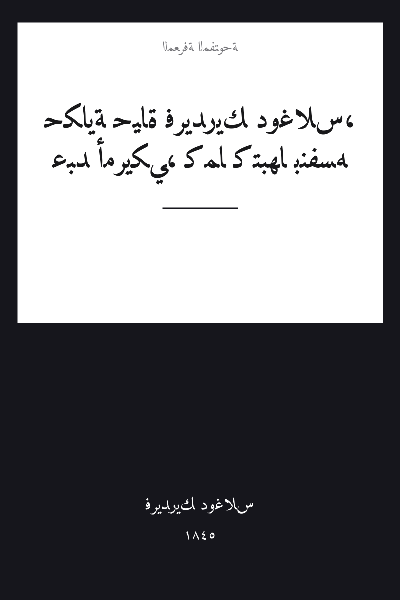

Narrative of the Life of Frederick Douglass, an American Slave
حكاية حياة فريدريك دوغلاس، عبدٍ أمريكي، كما كتبها بنفسه
القانون والسياسة
ملك عام
ترجمة كاملة
حكاية حياة فريدريك دوغلاس — أقوى الشهادات المكتوبة ضد الرقّ الأمريكي: سيرة العبد الذي ولد عبداً في مزرعةٍ بميريلاند، وعلّم نفسه القراءة في الخفاء من أطفال الشوارع البيض، وجلده «كسّار العبيد» كوفلي حتى صارعه وهزمه، ثم هرب شمالاً ليصير أقوى صوتٍ إبطالي في أمريكا. بقلمه هو، وبترجمة كاملة تشمل مقدمتَي غاريسون وفيليبس والملحقَ والسخرية الختامية.
| المؤلف | فريدريك دوغلاس — Frederick Douglass |
| سنة النص الأصلي | ١٨٤٥ |
| كلمات المصدر (الإنجليزية) | ٤١٣٢٠ |
| كلمات الترجمة (العربية) | ٢٨٦٤٦ |
| مقاطع الترجمة المدققة | ٣١ |
| مدة القراءة التقريبية | ≈ ٦٥١ دقيقة |
الترخيص والحقوق: النص الأصلي (1845) في الملك العام. هذه الترجمة العربية منشورة بإذن حر. المصدر: gutenberg.org/ebooks/23